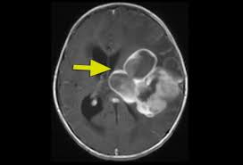
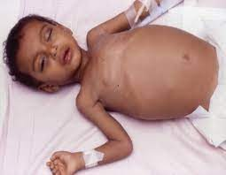
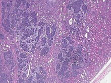
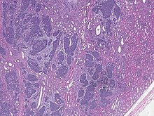

Child cancer, also known as pediatric cancer, refers to the occurrence of cancer in children and adolescents. Cancer is a complex disease characterized by the abnormal growth of cells in the body. When this abnormal cell growth affects children, it is termed child cancer. Child cancer is a distinct category of cancer because it differs from cancer that occurs in adults in terms of the types of cancer that are most common and the way it manifests in the developing bodies of children. The types of cancer that commonly affect children include leukemia (cancer of the blood and bone marrow), brain tumors, neuroblastoma (a cancer that arises in nerve cells), Wilms tumor (a kidney cancer), retinoblastoma (a cancer that affects the eye), osteosarcoma (a bone cancer), and rhabdomyosarcoma (a cancer that originates in muscle tissues), among others. Childhood cancer is relatively rare compared to cancer in adults, but it remains a significant health concern. It can affect children of all ages, from infants to teenagers. The causes of child cancer are often not well understood, but they can involve a combination of genetic factors, environmental exposures, and abnormalities in early development. The symptoms of child cancer vary depending on the type and location of the cancer. Common signs and symptoms include unexplained weight loss, persistent pain, swelling or lumps, fatigue, changes in vision, recurrent infections, and abnormal bleeding or bruising. However, it's important to note that the symptoms can vary widely, and some children may not exhibit obvious signs until the cancer has progressed. Diagnosis and treatment of child cancer typically involve a multidisciplinary approach with specialized pediatric oncologists, surgeons, radiation oncologists, and other healthcare professionals. The diagnostic process may include imaging tests, blood tests, biopsies, and bone marrow aspiration. Once diagnosed, the treatment plan is tailored to the specific type and stage of cancer, as well as the individual needs of the child. Treatment options may include surgery to remove tumors, chemotherapy to destroy cancer cells, radiation therapy to target cancerous tissues, immunotherapy to boost the immune systems response to cancer, targeted therapy to specifically target cancer cells, and stem cell transplantation to replace damaged bone marrow. Child cancer not only impacts the affected child but also has profound emotional, physical, and financial effects on their families. The journey of battling childhood cancer can be challenging and emotionally difficult for children and their loved ones. Supportive care, including psychological support, pain management, nutritional support, and palliative care, is an integral part of the treatment process to enhance the quality of life for children with cancer. While significant progress has been made in the treatment of childhood cancer over the years, ongoing research, improved access to healthcare, and support from organizations and communities are vital in advancing treatment outcomes, improving survival rates, and providing hope for children and families affected by child cancer
Here is a more detailed explanation of the common types of cancer that can occur in
children:
1. Leukemia: Leukemia is a cancer of the blood and bone marrow. The two main types seen in
children are acute lymphoblastic leukemia (ALL) and acute myeloid leukemia (AML). ALL is the most
common childhood cancer, and it starts in the bone marrow where immature lymphocytes (a type of
white blood cell) multiply uncontrollably. AML, although less common in children, affects myeloid
cells, which are responsible for producing various types of blood cells.


2. Brain and Central Nervous System (CNS) Tumors: Brain and CNS tumors can develop in different
parts of the brain or spinal cord. They can be classified as benign or malignant. Some common types
include medulloblastoma, which arises in the cerebellum, the part of the brain that controls
coordination and balance; gliomas, which can occur in different areas of the brain and are named
based on the type of brain cell they affect; and ependymomas, which arise from the cells lining the
ventricles in the brain or the central canal of the spinal cord.


3.Neuroblastoma: Neuroblastoma is a cancer that starts in immature nerve cells, called neuroblasts,
most commonly found in the adrenal glands on top of the kidneys. It can also develop in nerve tissue
along the spine, chest, abdomen, or pelvis. Neuroblastoma typically affects children under the age of
5 and can vary in severity, ranging from low-risk to high-risk forms.

4. Wilms Tumor: Wilms tumor, also known as nephroblastoma, is a kidney cancer that primarily
affects children. It usually occurs in children aged 3 to 4 years and is rare in older children or adults.
Wilms tumor develops in the cells of the kidney and can cause a noticeable mass or swelling in the
abdomen.
 
5. Retinoblastoma: Retinoblastoma is a rare cancer that develops in the retina, the light-sensitive
tissue at the back of the eye. It typically occurs in early childhood and can affect one or both eyes.
Retinoblastoma may cause a white pupil or a squint, and it requires prompt diagnosis and treatment
to preserve vision and prevent spread to other parts of the body.

5. Retinoblastoma: Retinoblastoma is a rare cancer that develops in the retina, the light-sensitive
tissue at the back of the eye. It typically occurs in early childhood and can affect one or both eyes.
Retinoblastoma may cause a white pupil or a squint, and it requires prompt diagnosis and treatment
to preserve vision and prevent spread to other parts of the body.
6. Osteosarcoma: Osteosarcoma is a type of bone cancer that primarily affects children and
adolescents during their growth spurt years. It commonly occurs in the long bones, such as those in
the arms or legs. Osteosarcoma can cause bone pain, swelling, and fractures. Prompt diagnosis and
treatment are crucial for managing this aggressive cancer.
7. Rhabdomyosarcoma: Rhabdomyosarcoma is a cancer that arises from cells that normally develop
into skeletal muscles. It can occur in various parts of the body, including the head and neck region,
urinary and reproductive organs, and limbs. Rhabdomyosarcoma can cause swelling or a visible mass
in the affected area and may be accompanied by pain or discomfort.
8. Hodgkin Lymphoma: Hodgkin lymphoma is a type of cancer that affects the lymphatic system, a
part of the immune system. It is less common in children compared to adolescents and young adults.
Hodgkin lymphoma is characterized by the presence of specific abnormal cells called Reed-Sternberg
cells. It can cause swollen lymph nodes, unexplained fever, fatigue, weight loss, and itching.

 9. Non-Hodgkin Lymphoma: Non-Hodgkin lymphoma is another type of cancer that affects the
lymphatic system. It can occur in children of all ages and has various subtypes, including Burkitt
lymphoma, diffuse large B-cell lymphoma, and lymphoblastic lymphoma. Non-Hodgkin lymphoma
can cause swollen lymph nodes, abdominal pain or swelling, fever, night sweats, and weight loss.
Its important to remember that each type of childhood cancer has its own unique characteristics,
treatment options, and prognosis. Early diagnosis, prompt medical attention, and specialized
pediatric oncology care are crucial for managing these cancers and improving outcomes for children affected by
9. Non-Hodgkin Lymphoma: Non-Hodgkin lymphoma is another type of cancer that affects the
lymphatic system. It can occur in children of all ages and has various subtypes, including Burkitt
lymphoma, diffuse large B-cell lymphoma, and lymphoblastic lymphoma. Non-Hodgkin lymphoma
can cause swollen lymph nodes, abdominal pain or swelling, fever, night sweats, and weight loss.
Its important to remember that each type of childhood cancer has its own unique characteristics,
treatment options, and prognosis. Early diagnosis, prompt medical attention, and specialized
pediatric oncology care are crucial for managing these cancers and improving outcomes for children affected by